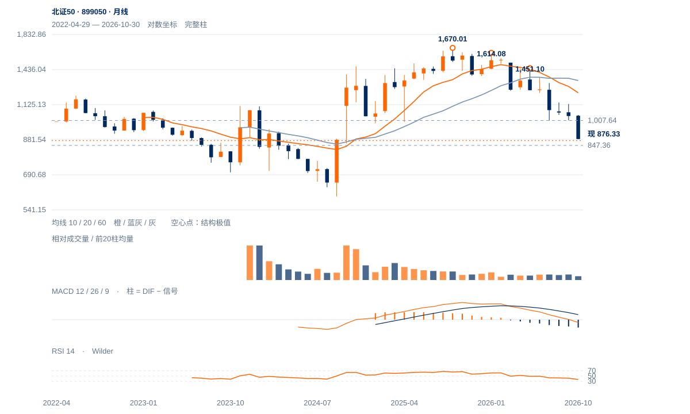

动量警示未转反转
存在下行动量减速的观察价值，但当前885下方弱收和相对落后更直接。先看847能否守住，收复885及922前，仍按下降结构内反弹处理。
存在下行动量减速的观察价值，但当前885下方弱收和相对落后更直接。先看847能否守住，收复885及922前，仍按下降结构内反弹处理。
未来2—6周仍倾向低位反复，先观察847守位及885—950一带回收质量。922中峰收复是动量改善转为价格确认的重要一步；旧确认条件未满足前，急反弹仍按下降结构内的反应处理。
未来1—3个月以下降后的筑底尝试为主，重返984—1009并形成较高周谷才明显改善。连续两周收低847会否定当前低位守住的假设；2024低594属于远端历史背景，当前没有直接指向该处的可靠测幅。

展开图表 ↗可用历史从2022年开始，尚不足60个月。2024低点593.92至2025高1670.01后，今年1月1614.08未创新高，5月再降至1451.10。现价876.33已低于2025低988.30及2024—2026升波61.8%回撤983.62；10月月RSI36.93、现价远低于10/20月均衡，长期结构在本组较弱。
7月1007.64、9月1009.08两谷曾形成区间下沿，但8月中峰1142.03从未被突破，随后下沿失守。该候选应结算为失败，1007—1009转成上方供应。11月4日847.36是当前低点，价格新低与收盘动量减速形成警示，尚未产生趋势反转。
1007—1009旧双谷候选失守，中峰1142从未完成突破。当前847守位与885—950逐层回收，比动量减速本身更具决定性。
10月19日低930.22对应日收RSI30.3；11月4日低847.36对应日收RSI36.9。两次价格低点下降、收盘动量上升，形成警示，但日收RSI并非最低价当时读数。
13日收876.33，重新落回旧月收及近端观察885.74下方；日跌3.50%、收盘位置8%，并未给出动量警示后的向上价格确认。
近20日跌7.75%，相对沪深300比值跌4.21%；前跌波后八日尾段仅净升2.49%，当前仍靠近847旧低。
收回885并保持，再检验922及原950两日确认。
847失守，撤销本轮前低保持假设；原动量警示不享有无限等待期。
最新低点附近的动量改善可能先于价格转折；若重新保持885并持续回收950，短期修复强度会高于当前弱势基准。
| 周期 | 最后完整柱 | 图示柱数 | RSI14 | ATR14 | MACD柱 |
|---|---|---|---|---|---|
| 日线 | 2026-11-13 | 185 | 37.664 | 32.49435 | 2.74259 |
| 周线 | 2026-11-13 | 156 | 29.31175 | 72.4959 | -9.59786 |
| 月线 | 2026-10-30 | 55 | 36.93047 | 179.05646 | -71.6789 |
国内完整周线至11月13日；11月月线进行中。指数价格不复权，长期历史按实际可用起点。